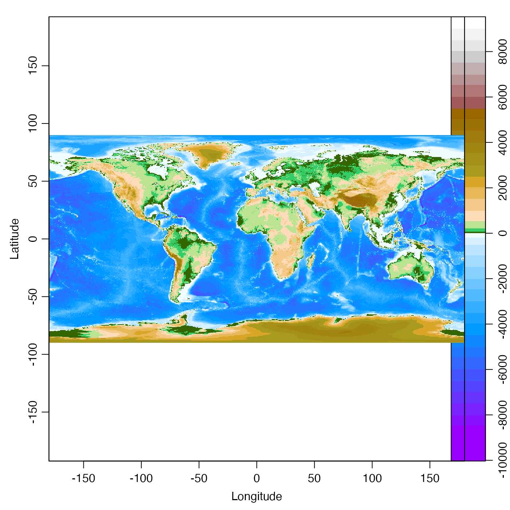
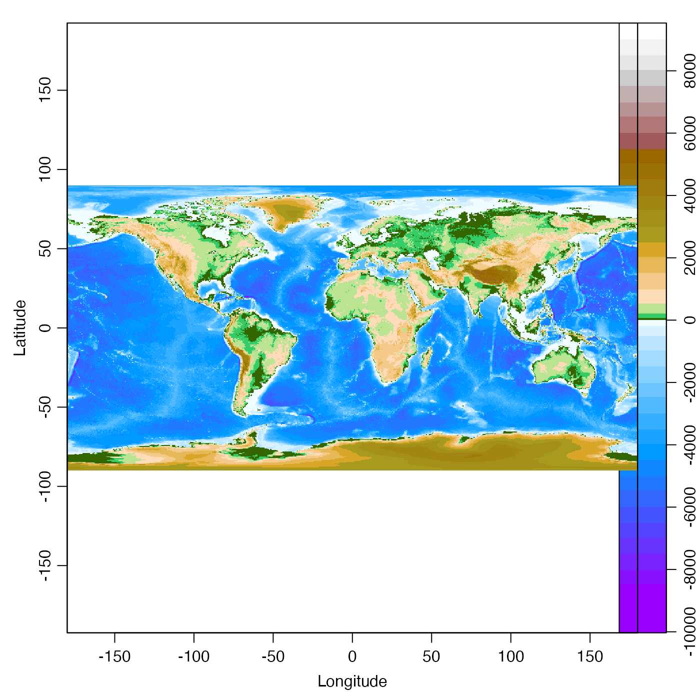

Plot an image with a color palette, in a way that does not conflict with
par("mfrow") or layout(). To plot just a palette,
e.g. to get an x-y plot with points colored according to a palette, use
drawPalette() and then draw the main diagram.
imagep(
x,
y,
z,
xlim,
ylim,
zlim,
zclip = FALSE,
flipy = FALSE,
xlab = "",
ylab = "",
zlab = "",
zlabPosition = c("top", "side"),
las.palette = 0,
decimate = TRUE,
breaks,
col,
colormap,
labels = NULL,
at = NULL,
drawContours = FALSE,
drawPalette = TRUE,
drawTriangles = FALSE,
tformat,
drawTimeRange = getOption("oceDrawTimeRange"),
filledContour = FALSE,
missingColor = NULL,
useRaster,
mgp = getOption("oceMgp"),
mar,
mai.palette,
xaxs = "i",
yaxs = "i",
asp = NA,
cex = par("cex"),
cex.axis = cex,
cex.lab = cex,
cex.main = cex,
axes = TRUE,
main = "",
axisPalette,
add = FALSE,
debug = getOption("oceDebug"),
...
)Arguments
- x, y
These have different meanings in different modes of operation. Mode 1. One mode has them meaning the locations of coordinates along which values matrix
zare defined. In this case, bothxandymust be supplied and, within each, the values must be finite and distinct; if values are out of order, they (andz) will be transformed to put them in order. ordered in a matching way). Mode 2. Ifzis provided but notxandy, then the latter are constructed to indicate the indices of the matrix, in contrast to the range of 0 to 1, as is the case forimage(). Mode 3. Ifxis a list, its componentsx$xandx$yare used forxandy, respectively. If the list has componentzthis is used forz. (NOTE: these arguments are meant to mimic those ofimage(), which explains the same description here.) Mode 4. There are also some special cases, e.g. ifxis a topographic object such as can be created withread.topo()oras.topo(), then longitude and latitude are used for axes, and topographic height is drawn.- z
A matrix containing the values to be plotted (NAs are allowed). Note that x can be used instead of z for convenience. (NOTE: these arguments are meant to mimic those of
image(), which explains the same description here.)- xlim, ylim
Limits on x and y axes.
- zlim
If missing, the z scale is determined by the range of the data. If provided,
zlimmay take several forms. First, it may be a pair of numbers that specify the limits for the color scale. Second, it could be the string"histogram", to yield a flattened histogram (i.e. to increase contrast). Third, it could be the string"symmetric", to yield limits that are symmetric about zero, which can be helpful in drawing velocity fields, for which a zero value has a particular meaning (in which case, a good color scheme might becol=oceColorsTwo).- zclip
Logical, indicating whether to clip the colors to those corresponding to
zlim. This only works ifzlimis provided. Clipped regions will be colored withmissingColor. Thus, clipping an image is somewhat analogous to clipping in an xy plot, with clipped data being ignored, which in an image means to be be colored withmissingColor.- flipy
Logical, with
TRUEindicating that the graph should have the y axis reversed, i.e. with smaller values at the bottom of the page. (Historical note: until 2019 March 26, the meaning offlipywas different; it meant to reverse the range of the y axis, so that ifylimwere given as a reversed range, then settingflipy=TRUEwould reverse the flip, yielding a conventional axis with smaller values at the bottom.)- xlab, ylab, zlab
Names for x axis, y axis, and the image values.
- zlabPosition
String indicating where to put the label for the z axis, either at the top-right of the main image, or on the side, in the axis for the palette.
- las.palette
Parameter controlling the orientation of labels on the image palette, passed as the
lasargument todrawPalette(). See the documentation fordrawPalette()for details.- decimate
Controls whether the image will be decimated before plotting, in three possible cases.
If
decimate=FALSEthen every grid cell in the matrix will be represented by a pixel in the image.If
decimate=TRUE(the default), then decimation will be done in the horizontal or vertical direction (or both) if the length of the corresponding edge of thezmatrix exceeds 800. (This also creates a warning message.) The decimation factor is computed as the integer just below the ratio ofzdimension to 400. Thus, no decimation is done if the dimension is less than 800, but if the dimension s between 800 and 1199, only every second grid point is mapped to a pixel in the image.If
decimateis an integer, then thatzis subsampled atseq.int(1L, dim(z)[1], by=decimate)(as isx), and the same is done for theydirection.If
decimateis a vector of two integers, the first is used for the first index ofz, and the second is used for the second index.
- breaks
The z values for breaks in the color scheme. If this is of length 1, the value indicates the desired number of breaks, which is supplied to
pretty(), in determining clean break points. Ifcolormapis provided, it takes precedence overbreaksandcol.- col
Either a vector of colors corresponding to the breaks, of length 1 plus the number of breaks, or a function specifying colors. If
colis not provided, and ifcolormapis also not provided, thencoldefaults tooceColorsViridis(). Ifcolormapis provided, it takes precedence overbreaksandcol.- colormap
A color map as created by
colormap(). If provided, thencolormap$breaksandcolormap$coltake precedence over the present argumentsbreaksandcol. (All of the other contents ofcolormapare ignored, though.) Ifcolormapis provided, it takes precedence overbreaksandcol.- labels
Optional vector of labels for ticks on palette axis (must correspond with
at).- at
Optional vector of positions for the
labels.- drawContours
Logical value indicating whether to draw contours on the image, and palette, at the color breaks. Images with a great deal of high-wavenumber variation look poor with contours.
- drawPalette
Indication of the type of palette to draw, if any. If
drawPalette=TRUE, a palette is drawn at the right-hand side of the main image. IfdrawPalette=FALSE, no palette is drawn, and the right-hand side of the plot has a thin margin. IfdrawPalette="space", then no palette is drawn, but space is put in the right-hand margin to occupy the region in which the palette would have been drawn. This last form is useful for producing stacked plots with uniform left and right margins, but with palettes on only some of the images.- drawTriangles
Logical value indicating whether to draw triangles on the top and bottom of the palette. This is passed to
drawPalette().- tformat
Optional argument passed to
oce.plot.ts(), for plot types that call that function. (Seestrptime()for the format used.)- drawTimeRange
Logical, only used if the
xaxis is a time. IfTRUE, then an indication of the time range of the data (not the axis) is indicated at the top-left margin of the graph. This is useful because the labels on time axes only indicate hours if the range is less than a day, etc.- filledContour
Boolean value indicating whether to use filled contours to plot the image.
- missingColor
A color to be used to indicate missing data, or
NULLfor transparent (to see this, try settingpar("bg")<-"red").- useRaster
A logical value passed to
image(), in cases wherefilledContourisFALSE. SettinguseRaster=TRUEcan alleviate some anti-aliasing effects on some plot devices; see the documentation forimage().- mgp
A 3-element numerical vector to use for
par(mgp), and also forpar(mar), computed from this. The default is tighter than the R default, in order to use more space for the data and less for the axes.- mar
A 4-element Value to be used with
par("mar"). If not given, a reasonable value is calculated based on whetherxlabandylabare empty strings.- mai.palette
Palette margin corrections (in inches), added to the
maivalue used for the palette. Use with care.- xaxs
Character indicating whether image should extend to edge of x axis (with value
"i") or not; seepar("xaxs").- yaxs
As
xaxsbut for y axis.- asp
Aspect ratio of the plot, as for
plot.default(). Ifxinherits from topo andasp=NA(the default) thenaspis redefined to be the reciprocal of the mean latitude inx, as a way to reduce geographical distortion. Otherwise, ifaspis notNA, then it is used directly.- cex
numeric character expansion factor, used for
cex.axis,cex.labandcex.main, if those values are not supplied.- cex.axis, cex.lab, cex.main
numeric character expansion factors for axis numbers, axis names and plot titles; see
par().- axes
Logical, set
TRUEto get axes on the main image.- main
Title for plot.
- axisPalette
Optional replacement function for
axis(), passed todrawPalette().- add
Logical value indicating whether to add to an existing plot. The default value,
FALSEindicates that a new plot is to be created. However, ifaddisTRUE, the idea is to add an image (but not its palette or its axes) to an existing plot. Clearly, then, arguments suchxlimare to be ignored. Indeed, ifadd=TRUE, the only arguments examined arex(which must be a vector; the mode of providing a matrix oroceobject does not work),y,z,decimate, plus eithercolormapor bothbreaksandcol.- debug
A flag that turns on debugging. Set to 1 to get a moderate amount of debugging information, or to 2 to get more.
- ...
Optional arguments passed to plotting functions.
Value
A list is silently returned, containing xat and yat,
values that can be used by oce.grid() to add a grid to the
plot.
Details
By default, creates an image with a color palette to the right. The effect is similar to
filled.contour() except that with imagep it is possible to
set the layout() outside the function, which enables the creation
of plots with many image-palette panels. Note that the contour lines may not
coincide with the color transitions, in the case of coarse images.
Note that this does not use layout() or any of the other screen
splitting methods. It simply manipulates margins, and draws two plots
together. This lets users employ their favourite layout schemes.
NOTE: imagep is an analogue of image(), and from that
it borrows a the convention that the number of rows in the matrix corresponds to
to x axis, not the y axis. (Actually, image() permits
the length of x to match either nrow(z) or 1+nrow(z), but
here only the first is permitted.)
See also
This uses drawPalette(), and is used by plot,adp-method(),
plot,landsat-method(), and other image-generating functions.
Examples
library(oce)
# 1. simplest use
imagep(volcano)
 # 2. something oceanographic (internal-wave speed)
h <- seq(0, 50, length.out=100)
drho <- seq(1, 3, length.out=200)
speed <- outer(h, drho, function(drho, h) sqrt(9.8 * drho * h / 1024))
imagep(h, drho, speed, xlab="Equivalent depth [m]",
ylab=expression(paste(Delta*rho, " [kg/m^3]")),
zlab="Internal-wave speed [m/s]")
# 3. fancy labelling on atan() function
x <- seq(0, 1, 0.01)
y <- seq(0, 1, 0.01)
angle <- outer(x,y,function(x,y) atan2(y,x))
imagep(x, y, angle, filledContour=TRUE, breaks=c(0, pi/4, pi/2),
col=c("lightgray", "darkgray"),
at=c(0, pi/4, pi/2),
labels=c(0, expression(pi/4), expression(pi/2)))
# 5. y-axis flipping
par(mfrow=c(2,2))
data(adp)
d <- adp[["distance"]]
t <- adp[["time"]]
u <- adp[["v"]][ , ,1]
imagep(t, d, u, drawTimeRange=FALSE)
mtext("normal")
imagep(t, d, u, flipy=TRUE, drawTimeRange=FALSE)
mtext("flipy")
imagep(t, d, u, ylim=rev(range(d)), drawTimeRange=FALSE)
mtext("ylim")
imagep(t, d, u, ylim=rev(range(d)), flipy=TRUE, drawTimeRange=FALSE)
mtext("flipy and ylim")
# 2. something oceanographic (internal-wave speed)
h <- seq(0, 50, length.out=100)
drho <- seq(1, 3, length.out=200)
speed <- outer(h, drho, function(drho, h) sqrt(9.8 * drho * h / 1024))
imagep(h, drho, speed, xlab="Equivalent depth [m]",
ylab=expression(paste(Delta*rho, " [kg/m^3]")),
zlab="Internal-wave speed [m/s]")
# 3. fancy labelling on atan() function
x <- seq(0, 1, 0.01)
y <- seq(0, 1, 0.01)
angle <- outer(x,y,function(x,y) atan2(y,x))
imagep(x, y, angle, filledContour=TRUE, breaks=c(0, pi/4, pi/2),
col=c("lightgray", "darkgray"),
at=c(0, pi/4, pi/2),
labels=c(0, expression(pi/4), expression(pi/2)))
# 5. y-axis flipping
par(mfrow=c(2,2))
data(adp)
d <- adp[["distance"]]
t <- adp[["time"]]
u <- adp[["v"]][ , ,1]
imagep(t, d, u, drawTimeRange=FALSE)
mtext("normal")
imagep(t, d, u, flipy=TRUE, drawTimeRange=FALSE)
mtext("flipy")
imagep(t, d, u, ylim=rev(range(d)), drawTimeRange=FALSE)
mtext("ylim")
imagep(t, d, u, ylim=rev(range(d)), flipy=TRUE, drawTimeRange=FALSE)
mtext("flipy and ylim")
 par(mfrow=c(1,1))
# 6. a colormap case
data(topoWorld)
cm <- colormap(name="gmt_globe")
imagep(topoWorld, colormap=cm)

par(mfrow=c(1,1))
# 6. a colormap case
data(topoWorld)
cm <- colormap(name="gmt_globe")
imagep(topoWorld, colormap=cm)
